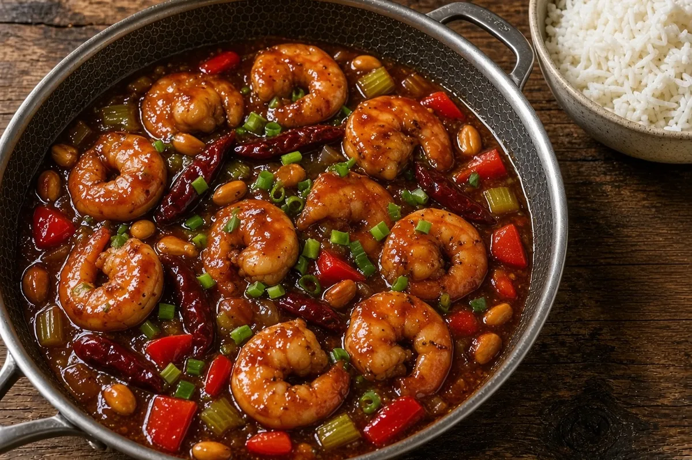

Kung Pao Shrimp
Restaurant-style Kung Pao shrimp like PF Chang's, built on real Sichuan flavors: velveted shrimp, toasted dried chiles, a light touch of Sichuan peppercorn, crunchy peanuts, and a glossy black-vinegar sauce over white rice. About 35 minutes in the HexClad.

By
Yield: 4 servings
Prep:
Cook:
Total:
Difficulty: Easy
Ingredients
- 1 1/2 lb large raw shrimp, peeled and deveined (21-25 count), thawed if frozen
- 1 egg white
- 1 Tbsp Shaoxing wine (or dry sherry), for the shrimp
- 1 Tbsp cornstarch, for the shrimp
- 1/2 tsp kosher salt
- 1 1/2 cups long-grain white rice
- 2 1/4 cups water, for the rice
- 1 tsp Sichuan peppercorns
- 3 Tbsp Chinkiang black vinegar (or rice vinegar)
- 2 Tbsp soy sauce
- 1 tsp dark soy sauce
- 1 Tbsp hoisin sauce (or oyster sauce)
- 2 Tbsp sugar
- 1 Tbsp Shaoxing wine (or dry sherry), for the sauce
- 1/2 cup chicken bone broth
- 2 tsp cornstarch, for the sauce
- 3 Tbsp avocado oil or beef tallow, divided
- 10 whole dried red chiles, stemmed and cut in half, seeds shaken out
- 4 garlic cloves, minced
- 1 Tbsp fresh ginger, minced
- 6 scallions, whites cut in 1/2-inch pieces and greens sliced
- 2 celery stalks, cut in 1/2-inch dice (or 1 small zucchini)
- 1 red bell pepper, cut in 3/4-inch pieces
- 1/2 cup roasted unsalted peanuts
- 1 tsp toasted sesame oil
Instructions
- Pat the shrimp very dry. Toss with the egg white, 1 Tbsp Shaoxing wine for the shrimp, 1 Tbsp cornstarch for the shrimp, and the salt; let the shrimp velvet in the fridge, 10 minutes.
- Meanwhile, rinse the rice, then bring it and the 2 1/4 cups water to a boil in a covered saucepan, 5 minutes. Reduce to low and cook covered 15 minutes, then rest off heat 5 minutes.
- Toast the Sichuan peppercorns in a dry HexClad wok or 12-inch HexClad skillet over medium heat until fragrant, 2 minutes. Cool 1 minute, then grind fine and set aside 1/4 tsp (save the rest for another dish).
- Whisk the black vinegar, soy sauce, dark soy sauce, hoisin sauce, sugar, 1 Tbsp Shaoxing wine for the sauce, chicken bone broth, and 2 tsp cornstarch for the sauce in a small bowl until the sugar dissolves, 1 minute.
- Heat 2 Tbsp of the oil in the wok over high heat until shimmering, 2 minutes. Add the shrimp in one layer and sear without moving, 1 minute, then flip and cook until just pink, 1 minute more. Move them to a plate.
- Add the remaining 1 Tbsp oil and the dried red chiles and stir-fry until they darken to deep red but do not blacken, 30 seconds.
- Add the celery and bell pepper and stir-fry until crisp-tender, 2 minutes.
- Add the garlic, ginger, and scallion whites and stir-fry until fragrant, 30 seconds.
- Stir the sauce, pour it in, and bubble until thick and glossy, 1 minute.
- Return the shrimp, add the peanuts and the ground Sichuan peppercorns, and toss to coat, 1 minute. Off the heat, drizzle in the sesame oil.
- Fluff the rice, spoon the Kung Pao shrimp over it, and top with the scallion greens. Serve right away, 1 minute.
Notes: Where to find it: at Kroger or Walmart in coastal Georgia, look in the Asian foods aisle for hoisin, oyster sauce, dark soy, rice vinegar, sesame oil, and often dried red chiles (also in the Hispanic aisle as chile de arbol). Shaoxing wine and Chinkiang black vinegar are usually only at an Asian market or online; use dry sherry and rice vinegar plus 1 tsp extra soy sauce. Sichuan peppercorns are in some spice aisles (McCormick Gourmet) or online; if you cannot find them, skip them and add a pinch of black pepper. Heat: whole chiles add aroma more than fire; leave them in for show and do not eat them. Use 6 for milder, 14 for hotter. The 1/4 tsp of Sichuan pepper gives a gentle tingle, not the full numbing of the Chengdu original. Leftovers keep 2 days; reheat in the HexClad with a splash of broth, 3 minutes. Do not freeze the cooked shrimp.